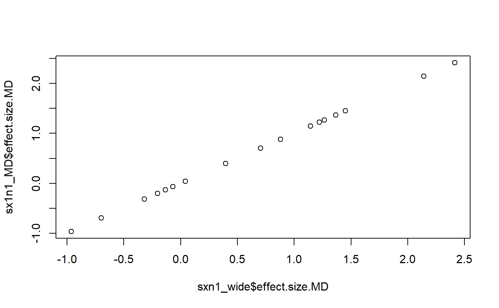

g1-calculating_effect_sizes_with_metafor.RmdIn order to do a meta-analysis or meta-analysis type work up of a data set we need to calculate effect sizes. The metafor package (Viechtbauer 2010) is probably the most popular R package for meta-analysis among biologist and can be used to calculate effect sizes, as well a carry out meta analyses.
Effect sizes are usually based on 2 quantities
The means and SDs of each group for a single study are then converted into an effects size, such as Cohen’s d or a response ratio, which summarizes the difference between the 2 treatments. Effect sizes can be useful for presenting the results for a single study in a currency that can be compared to other studies, and effect sizes from multiple studies can be combined into a meta-analysis.
In this tutorial we’ll calculate the necessary summary statistics using dplyr, and then effect sizes using metafor. We’ll calculate effect sizes for each of the 18 alleles investigated by a single section of the Neuro Defects lab.
library(shroom)
library(metafor)
#> Loading required package: Matrix
#> Loading 'metafor' package (version 2.0-0). For an overview
#> and introduction to the package please type: help(metafor).
library(dplyr)
#>
#> Attaching package: 'dplyr'
#> The following objects are masked from 'package:stats':
#>
#> filter, lag
#> The following objects are masked from 'package:base':
#>
#> intersect, setdiff, setequal, union
library(tidyr)
#>
#> Attaching package: 'tidyr'
#> The following object is masked from 'package:Matrix':
#>
#> expand
library(data.table)
#>
#> Attaching package: 'data.table'
#> The following objects are masked from 'package:dplyr':
#>
#> between, first, lastdata("wngscrs_sxn1")This is a somewhat large set of data
dim(wngscrs_sxn1)
#> [1] 624 15We can get a glimpse of the data using the table() command
with(wngscrs_sxn1,
table(gene.allele,
gene.shrt))
#> gene.shrt
#> gene.allele abl dia fhos ssh trio twn
#> abl.1 60 0 0 0 0 0
#> abl.2 53 0 0 0 0 0
#> abl.3 46 0 0 0 0 0
#> dia.1 0 16 0 0 0 0
#> dia.2 0 29 0 0 0 0
#> dia.3 0 27 0 0 0 0
#> fhos.1 0 0 38 0 0 0
#> fhos.2 0 0 43 0 0 0
#> fhos.3 0 0 34 0 0 0
#> ssh.1 0 0 0 32 0 0
#> ssh.2 0 0 0 66 0 0
#> ssh.3 0 0 0 33 0 0
#> trio.1 0 0 0 0 11 0
#> trio.2 0 0 0 0 15 0
#> trio.3 0 0 0 0 41 0
#> twn.1 0 0 0 0 0 19
#> twn.2 0 0 0 0 0 22
#> twn.3 0 0 0 0 0 39To use metafor to calculate effect sizes, you must first have means and SDs. For a single study, you might have single effect size summarize the difference between experimental and control treatments. When you are doing a meta analysis, you work up an effect size for each experiment; usually you extract summary stats from the published paper. In contrast, we are working with raw data from a multi-layered study, and we’ll be treating data from each student like a mini-study and then compare effect sizes across students within the same lab section like a meta-analysis.
Summary stats for our raw fly wing data can easily be worked up with dplyr’s group_by() and summarize() commands. In the following code we’ll summarize data for the 18 alleles in this lab section. We pass 3 things to group_by: the experimental group (E or C), the allele designation (“gene.allele”) and the allele name (“allele”). “gene.allele” and “allele” contain redundant information; “allele” is the precise name of the mutated gene (eg “abl[2]”) while “gene.allele” is just the name of the gene and a numeric code (1, 2 or 3) indicating the order which the alleles are organized in the dataset. This will help use with organization later.
We also include “student.ID” to further distinguish the seperate datasets (each student works on a single allele).
sxn1_summary <- wngscrs_sxn1 %>%
group_by(E.or.C,
gene.allele,
allele,
student.ID) %>%
summarize(mean = mean(wing.score),
sd = sd(wing.score),
n = n())We can look at the output; note that because dplyr creates “tibble” objects R only prints out a selection of columns.
sxn1_summary
#> # A tibble: 36 x 7
#> # Groups: E.or.C, gene.allele, allele [?]
#> E.or.C gene.allele allele student.ID mean sd n
#> <fct> <fct> <fct> <int> <dbl> <dbl> <int>
#> 1 C abl.1 abl[2] 1 4.64 0.742 33
#> 2 C abl.2 abl[04674] 2 3.91 1.44 35
#> 3 C abl.3 Df(3L)ED223 3 4.56 1.58 27
#> 4 C dia.1 dia[2] 10 3 NaN 1
#> 5 C dia.2 dia[5] 11 3.88 1.02 16
#> 6 C dia.3 Df(2L)ED1317 12 6.17 1.17 6
#> 7 C fhos.1 Fhos[01629] 7 5.64 0.505 11
#> 8 C fhos.2 Df(3L)ED4413 8 4.62 1.15 16
#> 9 C fhos.3 Df(3L)ED4414 9 5 1 19
#> 10 C ssh.1 slingshot[1-11] 16 5.92 1.16 12
#> # ... with 26 more rowsmetafor has a function, escalc(), which returns an effect size when given a mean and standard deviation. The form that you give data to escalc() depends on how you worked up the data.
We’ll first examine a simple case of calculating 1 effect size, then work up all of our data.
Let’s first look at a simple case: an effect size for a single allele. I’ll find the control and experimental results for the abl[2] allele, which is the 1st of 3 able alleles and so is also referred to as “abl.1”.
1st I’ll find the indices of the 2 desired rows of data. This requires the which() command. This code asks “which rows in the gene.allele column of the sxn1_summary dataframe contain the string ‘abl.1’.” (I could also use the dplyr filter command here too)
i.able.1 <- which(sxn1_summary$gene.allele == "abl.1")I can pull out using that index using square brackets.
abl.1 <- sxn1_summary[i.able.1, ]So I know have a 2-row summary table of just abl.1 for the control (C) and experimental (E) groups.
abl.1
#> # A tibble: 2 x 7
#> # Groups: E.or.C, gene.allele, allele [2]
#> E.or.C gene.allele allele student.ID mean sd n
#> <fct> <fct> <fct> <int> <dbl> <dbl> <int>
#> 1 C abl.1 abl[2] 1 4.64 0.742 33
#> 2 E abl.1 abl[2] 1 4.70 1.07 27A Cohen’s d effect size for the impact of the experimental treatment on fly wing phenotype would be calculated as:
(mean.1 - mean.2)/(“pooled” SD)
where the pooled SD is a weighted average the the 2 standard deviations.
metafor’s escalc() function luckily calculates the pooled SD for us, so we just have to give it the 2 means, the 2 SDs, and 2 two sample sizes.
I can isolate the means from the abl.1 summary table like this using square brackets [ ]
#1st row
mean.C <- abl.1$mean[1]
#2nd row
mean.E <- abl.1$mean[2]And similarly the SDs and Ns like this
# standard deviations
sd.C <- abl.1$sd[1]
sd.E <- abl.1$sd[2]
#sampel sizes
n.C <- abl.1$n[1]
n.E <- abl.1$n[2]I can then pass this information to escalc(). I also have to specify a “measure”, which is the name of an particular flavor of effect size. I’ll ask for the “SMD”, which is the “standardized mean difference”, which is a more generic name for Cohen’s d (actually an updated version called Hedge’s g).
escalc has some somewhat cryptic arguments
metafor::escalc(m1i = mean.C, m2i = mean.E,
sd1i = sd.C, sd2i = sd.E,
n1i = n.C, n2i = n.E,
measure = "SMD")
#> yi vi
#> 1 -0.0736 0.0674esclac() returns 2 things: “yi” and “vi”. yi is the effect size, and vi is the variance for the effects size. This variance value is used indicate how precisely the effect size was estimate, allowing calculation of standard errors and confidence intervals for a single effect size, and indicating how much influence (“weight”) a single effect size should have on a meta-analysis..
There are many flavors of effect sizes. One popular in ecology is the “log response ratio” (Hedges et al 1999), which is calculated as
log response ratio = log(mean.1/mean.2).
To get it, we use measure = “ROM”, where ROM = “ratio of means” (the log is implied). As best I can tell, the ROM was first used in ecology and independently was developed in medicine.
metafor::escalc(m1i = mean.C, m2i = mean.E,
sd1i = sd.C, sd2i = sd.E,
n1i = n.C, n2i = n.E,
measure = "ROM")
#> yi vi
#> 1 -0.0144 0.0027We can check escalc’s math if we want. The ratio of our means is just
mean.C/mean.E
#> [1] 0.9856836And the log of the ratio is
log(mean.C/mean.E)
#> [1] -0.01441986Due to the unique properties of how data work, the variance (vi) for a difference between 2 means (aka standardized difference between means, MSD) is calculated using a weighted average, while the variance for a ratio of 2 means (ROM) has a very different formula.
escalc() can also work with a formula notation similar to how the lm() function works. The notation is a bit complex though. This notation is very useful for when you have data summarized in “long” format from dplyr, so its worth the effort to see how it works.
escalc’s formula notation has these features:
“student.ID” is a numeric variable. In the code below we wrap it in factor() to convert it to a categorical variable. We could also set it to a factor in the dataframe like this
sxn1_summary$student.ID <- factor(sxn1_summary$student.ID)Let’s re-calculate the effect size for the 1st able allele. Note that for the dataset I am using the summary dataset we made of just the able 1 allele, which has only 2 rows
#> # A tibble: 2 x 7
#> # Groups: E.or.C, gene.allele, allele [2]
#> E.or.C gene.allele allele student.ID mean sd n
#> <fct> <fct> <fct> <int> <dbl> <dbl> <int>
#> 1 C abl.1 abl[2] 1 4.64 0.742 33
#> 2 E abl.1 abl[2] 1 4.70 1.07 27Now let’s get our effect size using formula notation. Again, on the left side of the equation is mean/sd, and the right side is a funky notation using a vertical bar. We also give it weights, the effect size measure and the data.
escalc(mean/sd ~ E.or.C | factor(student.ID),
weights = n,
measure = "SMD",
data = abl.1)
#> yi vi
#> 1 -0.0736 0.0674This should be the same result as our previous way of using escalc()
escalc(m1i = mean.C, m2i = mean.E,
sd1i = sd.C, sd2i = sd.E,
n1i = n.C, n2i = n.E,
measure = "SMD")
#> yi vi
#> 1 -0.0736 0.0674So far we’ve focused on the results of data collected on a single allele of the able gene by a single student. Now let’s use the full dataset, sxn1_summary, which has data on all 18 alleles for a single class. The only difference is the dataset I’m using (data = sxn1_summary) and I’ve added “var.names =…” to give the output informative column labels.
sx1n1_SMD <- escalc(mean/sd ~ E.or.C | factor(student.ID),
weights = n,
measure = "SMD",
data = sxn1_summary,
var.names = c("effect.size.SMD",
"var.SMD"),
append = T)
We now get a dataframe with 18. The top row should match our previous calculations. Let’s use the head() command to just look at the 1st few rows.
head(sx1n1_SMD)
#> effect.size.SMD var.SMD
#> 1 -0.0736 0.0674
#> 2 -0.3407 0.0852
#> 3 0.2990 0.0906
#> 4 NA NA
#> 5 -0.1462 0.1398
#> 6 0.9768 0.2320escalc gives us the variance for the effects size. We can get the confidence intervals using summary()
sx1n1_SMD_summary <- summary(sx1n1_SMD)Look at the output
head(sx1n1_SMD_summary)
#> effect.size.SMD var.SMD sei zi ci.lb ci.ub
#> 1 -0.0736 0.0674 0.2596 -0.2836 -0.5824 0.4352
#> 2 -0.3407 0.0852 0.2919 -1.1672 -0.9129 0.2314
#> 3 0.2990 0.0906 0.3011 0.9931 -0.2911 0.8891
#> 4 NA NA NA NA NA NA
#> 5 -0.1462 0.1398 0.3739 -0.3909 -0.8790 0.5866
#> 6 0.9768 0.2320 0.4816 2.0282 0.0328 1.9207A major drawback of escalc formula notation is that it that labels for the effect sizes aren’t returned!
It looks like escalc alphabetizes things so we should be able to match up the names. To make sure we know what’s doing on we’ll keep track of the group means to double check things.
To do this we need to reshape our data. Right now, our sxn1_summary dataframe has a seperate row for the control and experimental mean for each allele; this means there are 36 rows (18 alleles x 2 experimental groups)
head(sxn1_summary)
#> # A tibble: 6 x 7
#> # Groups: E.or.C, gene.allele, allele [6]
#> E.or.C gene.allele allele student.ID mean sd n
#> <fct> <fct> <fct> <fct> <dbl> <dbl> <int>
#> 1 C abl.1 abl[2] 1 4.64 0.742 33
#> 2 C abl.2 abl[04674] 2 3.91 1.44 35
#> 3 C abl.3 Df(3L)ED223 3 4.56 1.58 27
#> 4 C dia.1 dia[2] 10 3 NaN 1
#> 5 C dia.2 dia[5] 11 3.88 1.02 16
#> 6 C dia.3 Df(2L)ED1317 12 6.17 1.17 6
dim(sxn1_summary)
#> [1] 36 7Our table of effect sizes, however, combines the row for the Control group and the row for the experimental group into a single effect size, and so has just 18 rows.
sx1n1_SMD
#> effect.size.SMD var.SMD
#> 1 -0.0736 0.0674
#> 2 -0.3407 0.0852
#> 3 0.2990 0.0906
#> 4 NA NA
#> 5 -0.1462 0.1398
#> 6 0.9768 0.2320
#> 7 3.9013 0.3282
#> 8 0.7317 0.1058
#> 9 -0.1307 0.1195
#> 10 1.0546 0.1507
#> 11 1.0928 0.0717
#> 12 -0.2379 0.1372
#> 13 3.4756 0.9420
#> 14 0.8544 0.3021
#> 15 0.4856 0.1005
#> 16 1.5746 0.3819
#> 17 0.0595 0.2292
#> 18 -0.7189 0.1126So what we need to do is reshape our 36-row sxn1_summary dataframe into an 18 row dataframe with the a seperate column for each mean.
To do this reshaping we’ll use a cool function from the data.table package called dcast (actually dcast.data.table). “Casting” is an older approach to data reshaping the predates the tidyverse of packages. As best I can tell, the dcast.data.table is the best tool for what we need to do. This following code is a bit complicated and not yet fully annotated, sorry.
dcast stands for “data.frame cast” and to the best of my knowledge originated from the reshape2 package. reshape2 used the verbs melt and cast to describe reshaping data. reshape2 seems to have been largely been replaced by dplyr and tidyr, which use gather and spread. I like dcast syntax and logic better, and as best I can tell dcast.data.table does some things that spread can’t, though this may just be my ignorance of the full power of the tidyverse.
dcast.data.table (and dcast before it) use a formula interface to express how to manipulate data. Its a bit hard to describe the logic behind it. Basically, in the formula below I am using gene.allele (which has values like “able.1”) and allele (eg “able”) as ID variable columns, and the column E.or.C, which contains the values “E” or “C” for the experimental groups, defines a new column (or in this case column)
my.cast.formula <- formula(gene.allele + allele ~ E.or.C)dcast.data.table works on data.table objects, not data.frames or tibbles, so I need to convert my effect size summary object sxn1_summary, which is a tibble, to a data.frame object.
#what is sxn1_summary?
is(sxn1_summary)[2]
#> [1] "tbl_df"
#convert to data.table
sxn1_summary_dt <- data.table(sxn1_summary)
#wht is new object?
is(sxn1_summary_dt)[1]
#> [1] "data.table"dcast.data.table also takes an an argument value.var (“Value variables”), which are the columns that I want to be split up into new columns. This will be my columns for means,SDs, and sample size (n). Right now there are one columns for each of these, with values for controls (“C”) and experimental (“E”) within the same column. dcast.data.table will take each of these columns and reshape it from 3 columns to 6. So instead of a single mean column, I“ll have control-mean and experimental mean, control-sd and experimental-sd, etc.
I’ll but my value variables into a vector
my.vars <- c("mean","sd","n")Finally the magic
sxn1_wide <- dcast.data.table(data = sxn1_summary_dt,
formula = my.cast.formula,
value.var = my.vars)I’ll us as.tbl() to convert it to a tibble so we can see what it looks like
sxn1_wide <- as.tbl(sxn1_wide)
dim(sxn1_wide)
#> [1] 18 8
head(sxn1_wide)
#> # A tibble: 6 x 8
#> gene.allele allele mean_C mean_E sd_C sd_E n_C n_E
#> <fct> <fct> <dbl> <dbl> <dbl> <dbl> <int> <int>
#> 1 abl.1 abl[2] 4.64 4.70 0.742 1.07 33 27
#> 2 abl.2 abl[04674] 3.91 4.61 1.44 2.83 35 18
#> 3 abl.3 Df(3L)ED223 4.56 4.16 1.58 0.765 27 19
#> 4 dia.1 dia[2] 3 3.73 NaN 1.28 1 15
#> 5 dia.2 dia[5] 3.88 4.08 1.02 1.66 16 13
#> 6 dia.3 Df(2L)ED1317 6.17 5.29 1.17 0.784 6 21The dataframe is 18 rows by 8 columns, with columns names including mean_C, mean_E,sd_C,sd_E and n_C.
Compare this to the starting “long” dataframe.
dim(sxn1_summary)
#> [1] 36 7
head(sxn1_summary)
#> # A tibble: 6 x 7
#> # Groups: E.or.C, gene.allele, allele [6]
#> E.or.C gene.allele allele student.ID mean sd n
#> <fct> <fct> <fct> <fct> <dbl> <dbl> <int>
#> 1 C abl.1 abl[2] 1 4.64 0.742 33
#> 2 C abl.2 abl[04674] 2 3.91 1.44 35
#> 3 C abl.3 Df(3L)ED223 3 4.56 1.58 27
#> 4 C dia.1 dia[2] 10 3 NaN 1
#> 5 C dia.2 dia[5] 11 3.88 1.02 16
#> 6 C dia.3 Df(2L)ED1317 12 6.17 1.17 6This is 36 rows tall.
Now that we have our data in wide format we can calculate the difference between means by hand. I’ll call this mean.diff.
sxn1_wide$effect.size.MD <- sxn1_wide$mean_C - sxn1_wide$mean_EI’ll re-do my effect size calculations using measure = “MD” instead of RMD so I can compare things easily to my hand calculation of the mean difference (effect.size.MD)
sx1n1_MD <- escalc(mean/sd ~ E.or.C | factor(student.ID),
weights = n,
measure = "MD",
data = sxn1_summary,
var.names = c("effect.size.MD",
"MD.var"),
append = T)
Again, the whole point of this is to try to figure out how escalc organizes its output, and to associate the correct allele and gene names with its output. My table sxn1_wide that I made with the dcast.data.table function has these keys variables: gene names, allele names, means by group (E and C) and SDs by group.
names(sxn1_wide)
#> [1] "gene.allele" "allele" "mean_C" "mean_E"
#> [5] "sd_C" "sd_E" "n_C" "n_E"
#> [9] "effect.size.MD"dcast.data.table automatically organizes its output alphabetically and numerically, so abl.1 is first, abl.2 is second, abl.3 is third, and dia.1 is forth.
head(sxn1_wide)
#> # A tibble: 6 x 9
#> gene.allele alle~ mean_C mean_E sd_C sd_E n_C n_E effect.size.MD
#> <fct> <fct> <dbl> <dbl> <dbl> <dbl> <int> <int> <dbl>
#> 1 abl.1 abl[~ 4.64 4.70 0.742 1.07 33 27 -0.0673
#> 2 abl.2 abl[~ 3.91 4.61 1.44 2.83 35 18 -0.697
#> 3 abl.3 Df(3~ 4.56 4.16 1.58 0.765 27 19 0.398
#> 4 dia.1 dia[~ 3 3.73 NaN 1.28 1 15 -0.733
#> 5 dia.2 dia[~ 3.88 4.08 1.02 1.66 16 13 -0.202
#> 6 dia.3 Df(2~ 6.17 5.29 1.17 0.784 6 21 0.881In contrast, the object sx1n1_MD that I just now with escalc only has effect sizes and effect size variances.
names(sx1n1_MD)
#> [1] "effect.size.MD" "MD.var"I believe that escalc is organizing things alphabetically. If that’s true, then the effect sizes in the escalc object sx1n1_MD should match those I calculated by hand in the sxn1_wide object. I can test this by plotting them against each other.
plot(sxn1_wide$effect.size.MD,
sx1n1_MD$effect.size.MD)
Perfect!
I can now feel safe adding labels from sxn1_wide to sx1n1_SMD, which has the standardized mean difference (= COhen’s d, or more accurately Hedges g) I am interested in.
Because R is picky I have to use data.frame to make both of these objects the same class (for fun see the obtuse error message it gives you if you take data.frame out of the code below)
sx1n1 <- cbind(data.frame(sxn1_wide),
data.frame(sx1n1_SMD))Now, after all our hard work, let’s see what we have
names(sx1n1)
#> [1] "gene.allele" "allele" "mean_C"
#> [4] "mean_E" "sd_C" "sd_E"
#> [7] "n_C" "n_E" "effect.size.MD"
#> [10] "effect.size.SMD" "var.SMD"
head(sx1n1)
#> gene.allele allele mean_C mean_E sd_C sd_E n_C n_E
#> 1 abl.1 abl[2] 4.636364 4.703704 0.7423856 1.0675210 33 27
#> 2 abl.2 abl[04674] 3.914286 4.611111 1.4424536 2.8313142 35 18
#> 3 abl.3 Df(3L)ED223 4.555556 4.157895 1.5770794 0.7647191 27 19
#> 4 dia.1 dia[2] 3.000000 3.733333 NaN 1.2798809 1 15
#> 5 dia.2 dia[5] 3.875000 4.076923 1.0246951 1.6563785 16 13
#> 6 dia.3 Df(2L)ED1317 6.166667 5.285714 1.1690452 0.7837638 6 21
#> effect.size.MD effect.size.SMD var.SMD
#> 1 -0.06734007 -0.07362611 0.06738524
#> 2 -0.69682540 -0.34074605 0.08522234
#> 3 0.39766082 0.29897415 0.09064020
#> 4 -0.73333333 NA NA
#> 5 -0.20192308 -0.14616835 0.13979144
#> 6 0.88095238 0.97679254 0.23195467A quick way to plot effect sizes is to use the forest() function in metafor. I’m not super excited about its output, but it quickly gives you a visualization. It takes the arguments
metafor::forest(x = sx1n1$effect.size.SMD,
vi = sx1n1$var.SMD,
slab = sx1n1$gene.allele,
annotate = F,
xlim = c(-2.75,3.25))Recall that we got confidence intervals using summary(). We can feed that into a plot on our own, once we get some time…